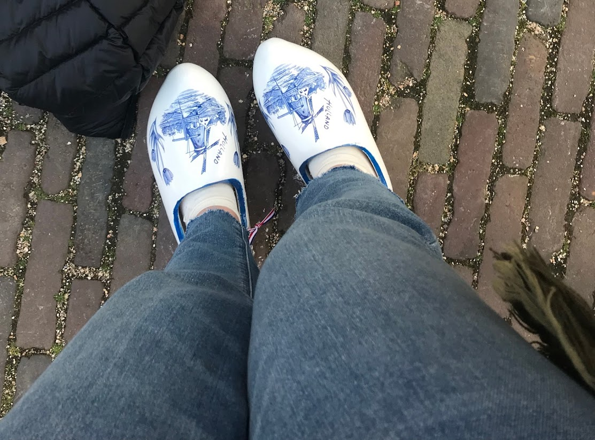
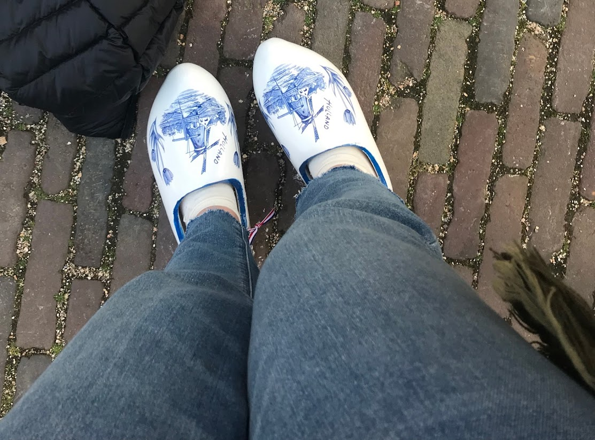

- Homepage
- All About Me!
- France
- The Netherlands
The Netherlands
This February, I went to the Netherlands with my school. This trip was due to my acceptance into my schools exchange program the June before. Something really cool about the program that I got into is that everyone has to host an exchange student before we go there. In September, I hosted a Dutch boy named Rene for 6 days. I really didn't get to know him that well because of time. When we went to his country, I had the time of my life. Rene hosted another girl from my school named Katherine. During the time we were there; we watched Netflix, played Mario Party, listened to Post Malone when we were sad and went ice skating!
During my time in the Netherlands, my school and I went to a lot of attractions around the countries. Some of the coolest places I've been to had to be in Amsterdam. One of the places I really enjoyed was the Van Gogh Museum. A lot of my friends and I before we went were extremely excited because on Instagram we saw photos of sunflowers surrounding the place. When we got to the Museum, we were a little dissapointed that there were no flowers and Van Goghs "Sunflower" painting was not there. The museum had paintings that spanned through the artists' several phases. Another place that I was stunned by was the Anne Frank House. This was the first year that my school got tickets for since 2017. I would show you all what was inside but there was a strict 'no pictures' policy inside. This museum/house had a deeper meaning as it showed me, a teenage Jewish girl in 2019, what it would be like to hide from Nazis in the 40s. This museum made me cry a lot.
 
